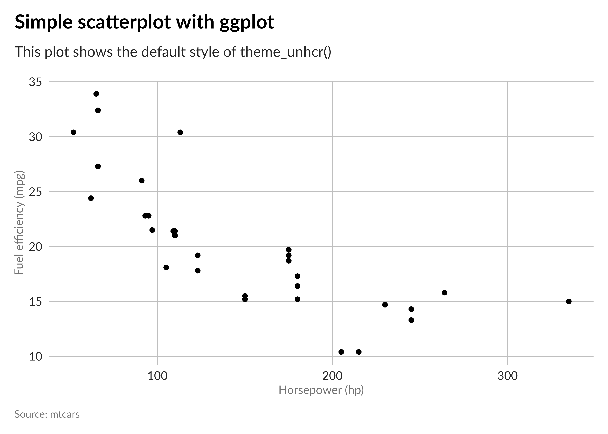
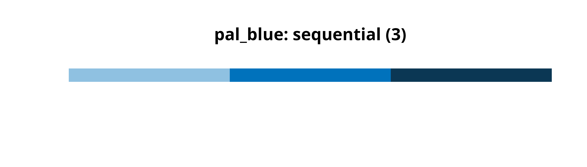
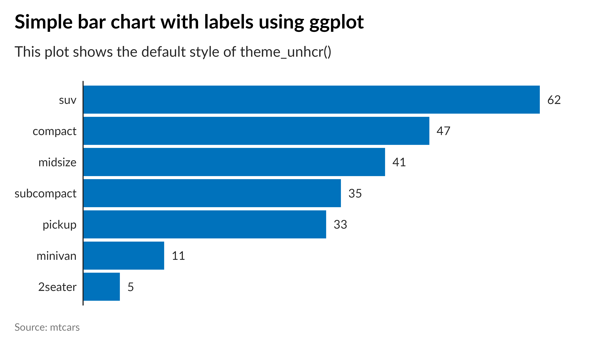

Simplify the creation of your data visualizations with the unhcrthemes R package. It is designed to align your plots with UNHCR’s data visualization recommendations. This package offers a comprehensive ggplot2 theme, including built-in customizations and thoughtfully crafted color palettes.
Features
- A consistent and appealing ggplot2 theme that matches UNHCR Data Visualization Guidelines.
- A collection of color palettes ensuring your plots are consistent with UNHCR’s color scheme.
- Easy-to-use functions to apply the theme and color palettes to your ggplot2 plots.
Installation
Get started by installing the unhcrthemes package from GitHub using the pak library:
# If pak is not yet installed, uncomment the following line:
# install.packages("pak")
pak::pkg_install("unhcr-dataviz/unhcrthemes")Usage
# Load required packages
library(ggplot2)
library(unhcrthemes)Base {ggplot2} theme
# Apply the theme_unhcr() to your plot
ggplot(
mtcars,
aes(x = hp, y = mpg)
) +
geom_point() +
labs(
title = "Simple scatterplot with ggplot",
subtitle = "This plot shows the default style of theme_unhcr()",
x = "Horsepower (hp)",
y = "Fuel efficiency (mpg)",
caption = "Source: mtcars"
) +
theme_unhcr()
Font
One of the two officially recommended fonts outlined in the UNHCR Data Visualization Guidelines is Lato. To ensure optimal functionality of the unhcrthemes package, please make sure that the Lato font is installed on your device prior to usage.
Color palettes
Choose from a variety of carefully curated color palettes that harmonize with UNHCR’s visual identity.
# Display all unhcr color palette
display_unhcr_all()
# Or select a specific one and limit the number of colors
display_unhcr_pal(n = 3, "pal_blue")
Scales (color/fill)
# Add color scale to your plot
ggplot(
mtcars,
aes(x = hp, y = mpg, color = as.factor(cyl))
) +
geom_point(alpha = .8) +
labs(
title = "Simple scatterplot with ggplot",
subtitle = "This plot shows the default style of theme_unhcr()",
x = "Horsepower (hp)",
y = "Fuel efficiency (mpg)",
color = "Number of cylinder",
caption = "Source: mtcars"
) +
scale_color_unhcr_d() +
theme_unhcr(legend_title = TRUE)Geoms (text/label)
# Default Lato font also apply for geom_text and label
dplyr::count(mpg, class) |>
dplyr::arrange(n) |>
dplyr::mutate(class = factor(class, levels = class)) |>
ggplot(aes(n, class)) +
geom_col(fill = unhcr_pal(n = 1, "pal_blue")) +
geom_text(aes(label = n), hjust = 0, nudge_x = 1) +
labs(
title = "Simple bar chart with labels using ggplot",
subtitle = "This plot shows the default style of theme_unhcr()",
caption = "Source: mtcars"
) +
scale_x_continuous(expand = expansion(c(0, 0.1))) +
theme_unhcr(grid = FALSE, axis = "y", axis_title = FALSE, axis_text = "y")
Explore more examples of unhcrthemes in action on the package vignette or UNHCR Data Visualization Platform.
Additional UNHCR Tools
-
{refugees}: A comprehensive package for accessing UNHCR Refugee Population Statistics Database. -
{unhcrdown}: UNHCR branded templates for R Markdown. -
quarto-revealjs-unhcr: A Quarto extension to create UNHCR brandedreveal.jspresentations. -
quarto-html-unhcr: A Quarto extension to create UNHCR brandedHTMLdocument. - Data Visualization Platform: A collection of recommendations on selecting the best type of chart, general dataviz design, tools and tutorials and a selection of data visualization products made by UNHCR.
Acknowledgements
We extend our gratitude to the creators of the {hrbrthemes}, {rcartocolor} and {cowplot} packages that influenced the development of unhcrthemes.
Contribution and Code of Conduct
Contributions to unhcrthemes are highly valued. To ensure a welcoming and inclusive community, we follow our Contributor Code of Conduct. If you have suggestions, uncover bugs, or envision new features, kindly submit an issue on GitHub. To contribute code, don’t hesitate to fork the repository and create a pull request.
License
This package is distributed under the MIT License.